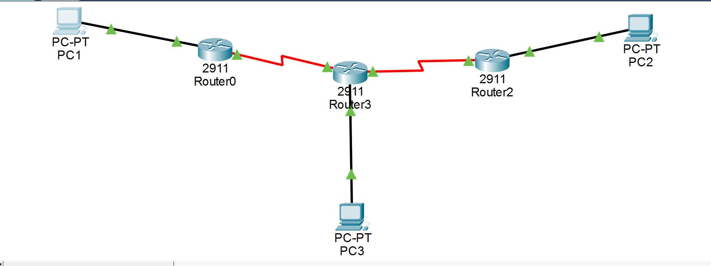
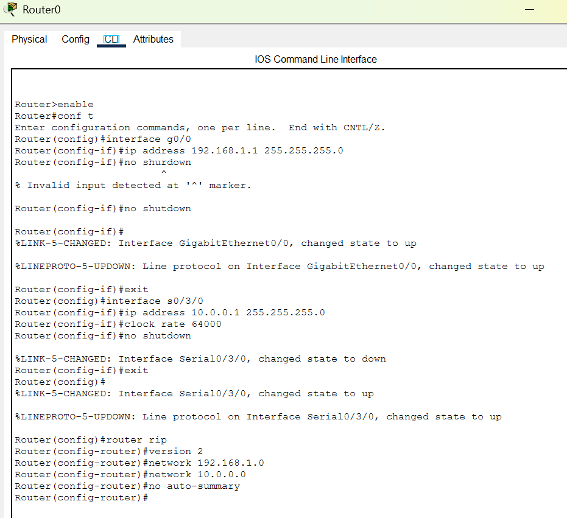
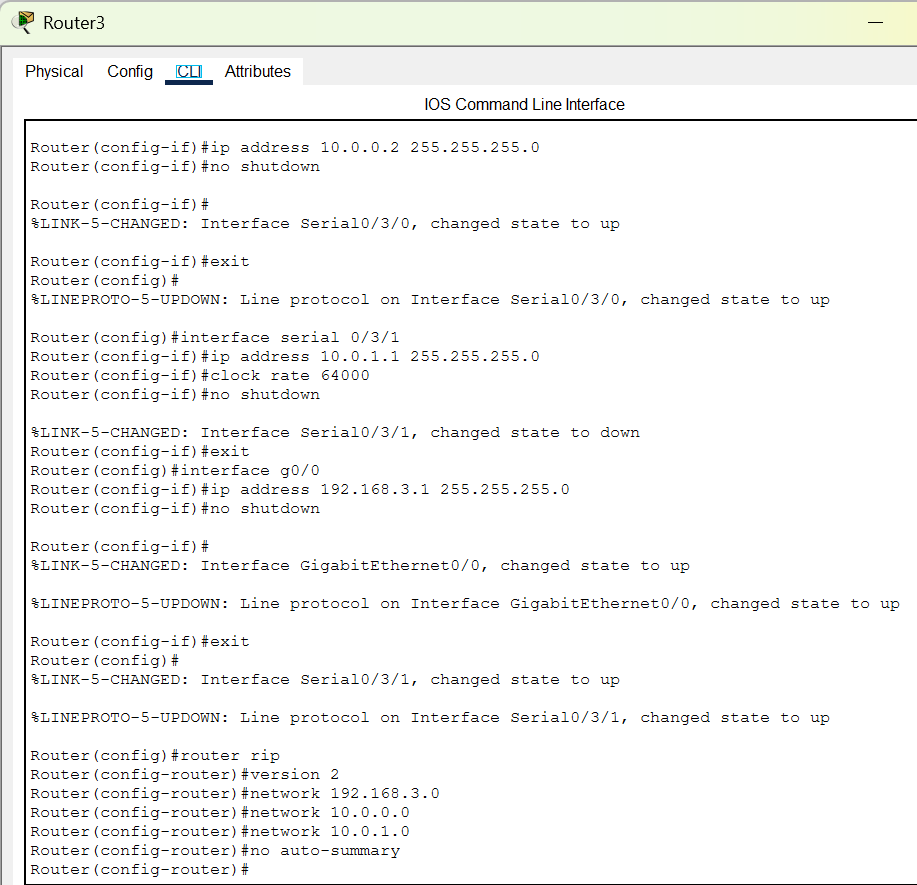
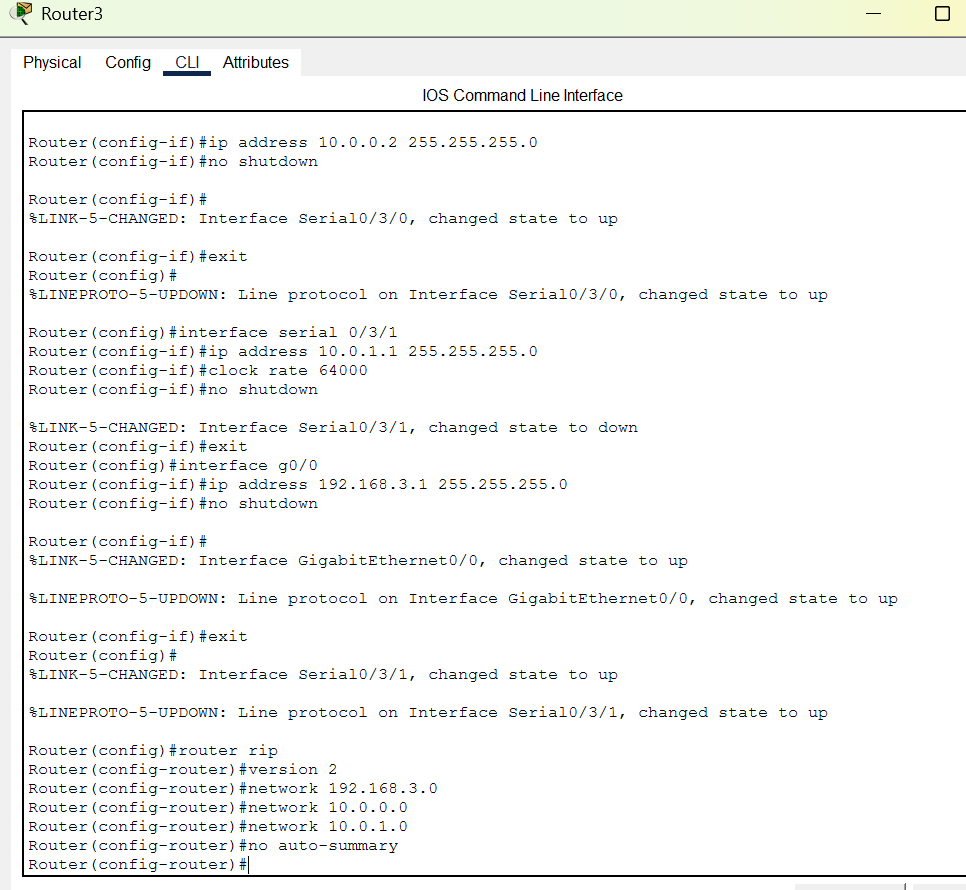
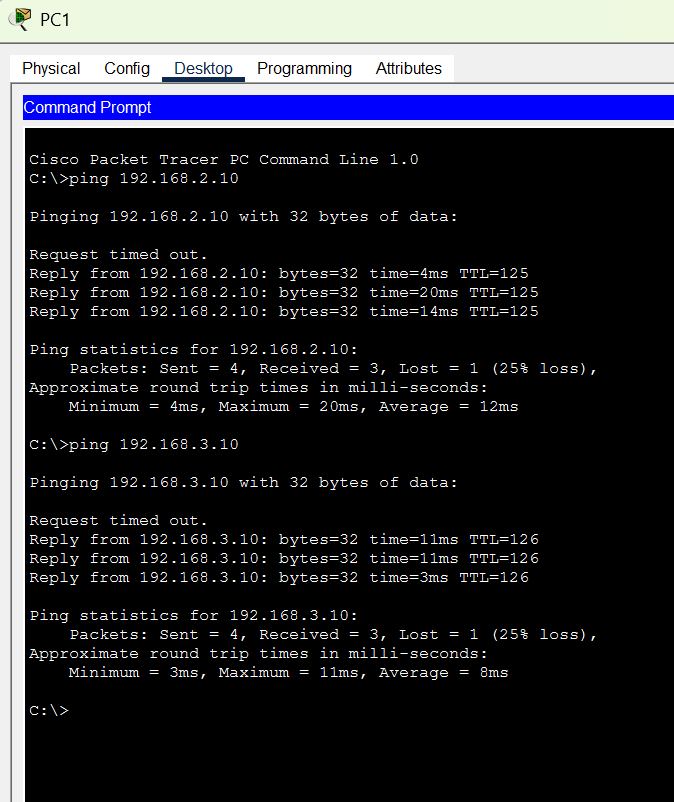

Infrastructure Cisco — Routage RIP
Projet réalisé sous Cisco Packet Tracer consistant à concevoir une infrastructure réseau complète avec plusieurs routeurs et réseaux interconnectés. L’objectif était de permettre la communication entre plusieurs machines grâce au routage dynamique RIP v2.
Objectifs du projet
🖧 Création de topologie réseau
Mise en place de 3 routeurs Cisco 2911 et de plusieurs réseaux locaux.
🌐 Adressage IP
Configuration des interfaces réseau avec des plages IP privées.
🔁 Routage dynamique RIP v2
Configuration du protocole RIP afin de permettre l’échange automatique des routes entre les routeurs.
💻 Tests réseau
Vérification de la connectivité avec des commandes ping entre les différents postes.
Topologie réseau

Configuration RIP v2



Validation de la connectivité
Vérification des échanges réseau entre les différents PC via des commandes ping.

Compétences développées
CLI Cisco IOS
Utilisation des commandes IOS pour configurer les interfaces, les routes et les protocoles.
Réseaux IP
Compréhension des sous-réseaux, des masques et des communications inter-réseaux.
Diagnostic réseau
Analyse des états d’interfaces et résolution de problèmes réseau.
Routage dynamique
Compréhension du fonctionnement du protocole RIP v2.